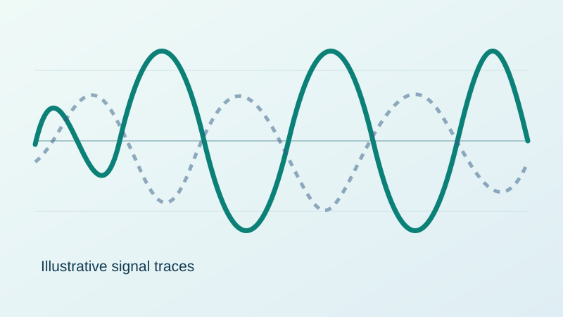

Nonlinearity Compensation
Investigating how to mitigate strong nonlinear distortion in high-frequency communication links.

Illustrative waveform comparison — not experimental data. Replace this graphic with your own figure before using the site as evidence of results.
The challenge
Nonlinear components in the transmit and receive chains can distort waveforms and degrade signal quality, especially in challenging experimental configurations.
What I worked on
Analysed measured transmit and receive waveforms and investigated nonlinear equalisation using Volterra models. Compared signal quality before and after processing and explored the limits of model-based methods for strongly nonlinear systems.
Results and visuals
Replace the illustration with your before/after constellation, spectrum, EVM or BER plots. Only report metrics supported by your experimental data.
assets folder and change the image path above. Add your actual findings here, with units and conditions.Key takeaway
Characterising nonlinear distortion and evaluating practical compensation techniques.
Publication or further reading
Add a DOI, publication link, poster, or PDF if you have permission to share it. No source code is required.